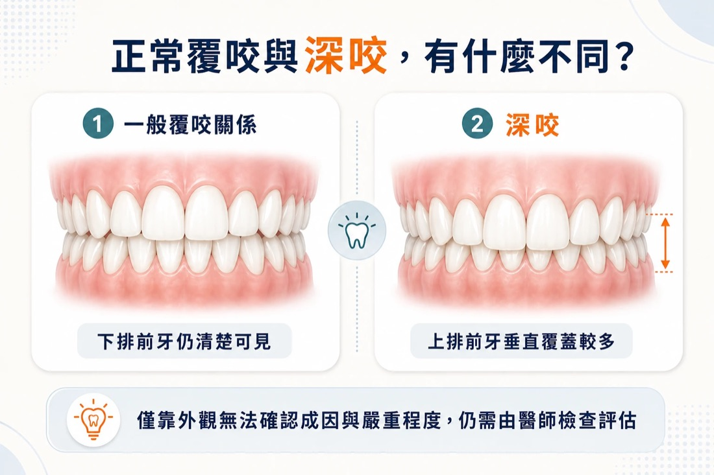
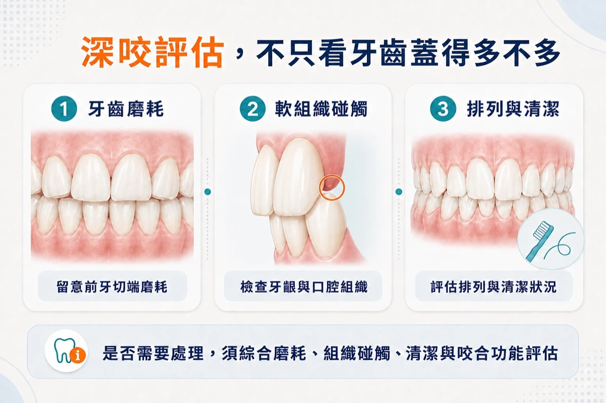
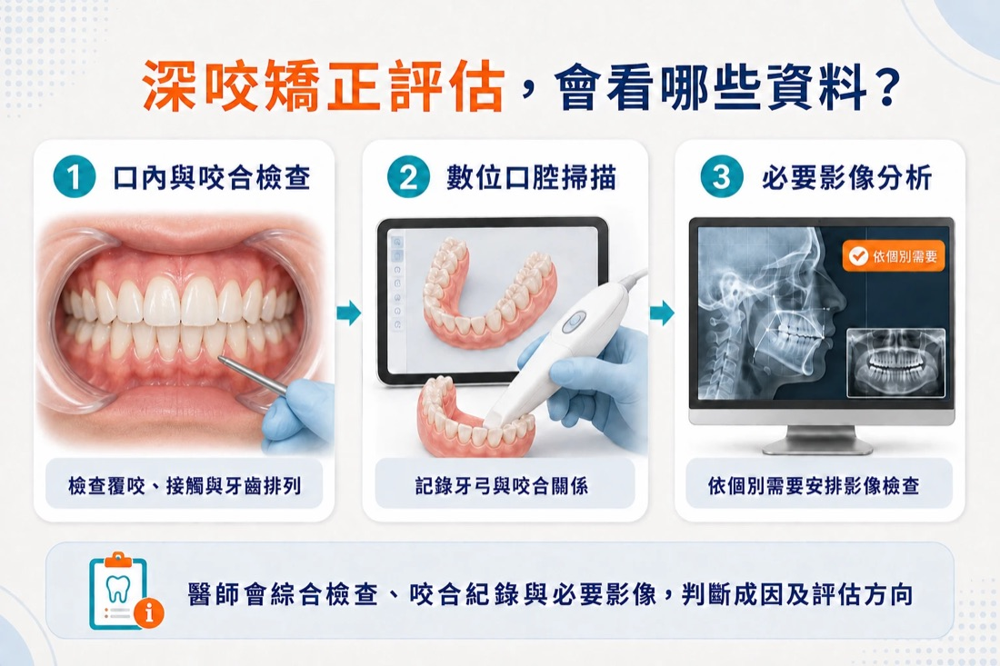

前言
照鏡子或拍照時，有些人會發現下排門牙幾乎被上排門牙蓋住，因而擔心自己是不是「深咬」。也有人沒有明顯不舒服，直到牙齒磨耗、牙齦受到碰觸，或接受牙科檢查時，才知道上下前牙的垂直覆蓋較深。
深咬又可稱為過度覆咬，指後牙咬合時，上排前牙在垂直方向覆蓋下排前牙的程度較多。它不只是「牙齒看起來蓋得比較深」，背後還可能涉及前牙角度、牙齒萌發高度、上下顎關係與臉部生長型態。
不過，看到下排牙齒較少，不代表一定需要矯正，也不能只憑照片判斷嚴重程度。是否需要處理，應綜合評估咬合、牙齒磨耗、牙齦與口腔組織、清潔情況、年齡與生長狀態，以及患者在意的功能或外觀問題。
本文整理深咬的常見表現、可能影響、檢查方式，以及固定式牙套與隱形矯正的評估重點。實際診斷與治療仍須由齒顎矯正醫師依個別檢查結果判斷。

※深咬是上下前牙垂直覆蓋較多；僅靠外觀無法確認成因與嚴重程度，仍需由醫師檢查咬合與口腔組織。
本文重點
- 深咬是上排前牙對下排前牙的垂直覆蓋程度較多。
- 深咬可能與牙齒位置、萌發高度、顎骨關係及生長型態等因素有關。
- 並非所有深咬都會出現症狀，也不是看到下排門牙較少就一定要矯正。
- 若已出現軟組織碰觸、牙齒磨耗、清潔困難或咬合功能困擾，應安排評估。
- 固定式牙套與隱形牙套都可能納入治療選項，但沒有一種方式適合所有人。
- 治療完成後仍須依醫師指示進入維持與追蹤階段。
深咬是什麼？和暴牙一樣嗎？
深咬主要描述上下前牙在「垂直方向」的覆蓋關係；一般所說的暴牙或前牙突出，則較偏向前後方向的位置與外觀。兩種情況可能同時存在，也可能只出現其中一種，因此不能把深咬直接等同於暴牙。
醫師判斷時，不會只看上排牙齒遮住下排牙齒多少，還會一起觀察：
- 上下前牙的傾斜角度與位置
- 下排前牙是否碰到上顎牙齦或顎側組織
- 上排前牙後方是否被下排牙齒碰觸
- 前牙與後牙的咬合接觸
- 牙齒是否已有磨耗、裂紋或牙周問題
- 上下顎骨與臉部垂直比例
- 兒童或青少年是否仍在生長發育
一般常以覆蓋比例或毫米數說明深咬，但不同年齡、牙齒狀態與臨床量測方式都可能影響判讀。患者不宜自行用照片或尺測量後下結論，仍應以醫師的口內檢查與必要影像分析為準。
為什麼會深咬？
深咬通常不是單一原因造成。依個別情況，可能與牙齒及齒槽、顎骨生長、肌肉與咬合型態等因素有關。
1. 前牙位置或角度
上排或下排前牙的傾斜、萌發高度與排列位置，可能使垂直覆蓋程度增加。有些人的牙齒外觀看似整齊，仍可能存在較深的覆咬。
2. 後牙高度與咬合關係
前後牙的垂直高度會共同影響咬合。如果後牙垂直高度、前牙萌發或整體咬合平面有所差異，前牙覆蓋也可能加深。
3. 上下顎骨及臉部生長型態
部分深咬與上下顎骨的位置或垂直生長型態有關。牙齒性與骨骼性的成因可能同時存在，而這會影響醫師選擇牙齒移動方式，以及是否需要其他治療配合。
4. 缺牙、牙齒磨耗或既有口腔狀況
牙齒缺失、明顯磨耗、既有假牙或其他口腔狀況，也可能改變咬合接觸。這類情況不能只處理表面的牙齒排列，需要把整體口腔治療順序一併納入規劃。
深咬可能造成哪些影響？
深咬的影響因程度與個人口腔條件而異。有些人沒有明顯症狀；有些人則可能出現牙齒或軟組織反覆受到碰觸的情況。
可能需要留意的現象包括：
- 下排前牙碰觸上顎牙齦或顎側組織
- 上排前牙後方或下排前牙周圍反覆不適
- 前牙切端或牙齒表面出現磨耗
- 牙齒排列重疊，使部分區域較難清潔
- 咬東西或前牙切咬時感到不順
- 對笑容、前牙露出或下臉部外觀感到在意
必須注意的是，深咬與顳顎關節疼痛、頭痛或磨牙之間不能直接畫上因果關係。若有張口疼痛、關節聲響、臉部疼痛或夜間磨牙等問題，仍需分別評估，不能直接認定只要矯正深咬就一定能改善。

※深咬是否需要處理，不能只看覆蓋深度；牙齒磨耗、軟組織碰觸、清潔與咬合功能都需要一起評估。
深咬一定要矯正嗎？哪些情況建議安排評估？
不一定每個深咬都需要立刻接受矯正。醫師通常會依嚴重程度、是否持續造成傷害、年齡與生長狀態，以及患者的功能與外觀需求判斷。
若有以下情況，建議安排牙齒矯正評估：
- 下排門牙幾乎看不到，且懷疑覆蓋程度明顯
- 牙齒會碰到牙齦、上顎組織或造成反覆破皮
- 前牙已有明顯磨耗、缺角或不正常接觸
- 咬合時感到卡住，或前牙切咬功能受到影響
- 同時有牙齒擁擠、前牙突出或其他咬合問題
- 兒童或青少年的咬合與臉部生長需要追蹤
- 曾接受矯正，但覆咬又逐漸加深
如果沒有疼痛，也不代表一定可以忽略；相反地，外觀看起來覆蓋較深，也不代表一定要治療。完整檢查的目的，是確認目前狀況是否造成組織傷害、是否可能持續變化，以及治療與持續觀察各自的考量。
醫師會如何檢查深咬？
深咬評估通常會從主訴與病史開始，再搭配口內、臉部與咬合檢查。依個別醫療需要，可能包含：
- 了解患者在意的功能、外觀與不適情況。
- 檢查上下前牙覆蓋、前後牙接觸與牙齒排列。
- 查看牙齒磨耗、牙齦、牙周與口腔軟組織狀況。
- 拍攝口內與臉部照片，記錄正面、側面及咬合關係。
- 使用數位口腔掃描或齒模分析牙弓及咬合。
- 視需要安排全口 X 光、側顱 X 光或其他影像檢查。
- 綜合牙齒性、骨骼性與生長因素，討論治療或追蹤方向。
並非每個人都需要完全相同的檢查。若想先了解矯正諮詢時常見的資料收集方式，可延伸閱讀〈第一次諮詢隱適美會做什麼？一定要 3D 口掃、拍 X 光嗎？〉。

※醫師會綜合口內檢查、咬合紀錄、數位掃描及必要影像資料，判斷深咬的成因與治療方向。
深咬可以用固定式牙套或隱形矯正嗎？
固定式矯正器與透明牙套都可能用於深咬治療，但實際可行性取決於深咬屬於牙齒性或骨骼性、需要移動哪些牙齒、患者年齡、牙周健康與配合度。
醫師可能依治療目標設計不同的牙齒移動，例如調整前牙高度或角度、調整後牙垂直位置、改善牙弓與咬合接觸，必要時搭配附件、橡皮筋、骨釘或其他輔助方式。這些處置並非每位患者都需要，也不能在檢查前預先決定。
近年的文獻回顧顯示，透明牙套可用於部分輕度至中度、以牙齒及齒槽因素為主的深咬病例；但實際的矯正量因諸多原因導致可能低於數位治療計畫的預期，常需經過幾次的治療計畫調整而達成。骨骼性或較複雜病例能否單靠透明牙套完成也仍有不確定性。因此，醫師常會以複合式的治療方式，將隱形牙套搭配骨釘或其他輔助裝置來解決骨骼性複雜病例的問題。
若正在比較台南牙齒矯正與台南隱形矯正，建議先確認治療目標與限制，再討論裝置。可延伸閱讀〈台南隱適美 vs 傳統牙套差在哪？療程時間與適合族群比較〉。
深咬矯正一定要拔牙或打骨釘嗎？
不一定。拔牙、骨釘或其他輔助裝置只是部分治療計畫可能使用的方式，不能只根據「有深咬」就決定。
是否需要拔牙，還要考量牙弓空間、牙齒擁擠、前牙突出程度、臉型、牙根與牙周條件，以及整體治療目標。骨釘則可能在特定牙齒移動或支抗需求下納入評估，但並非深咬治療的固定流程。
若擔心矯正是否需要拔牙，可閱讀〈隱適美需要拔牙嗎？哪些情況需要、哪些不用？〉。最終仍應以個人口內檢查與影像分析為準。
兒童與成人深咬，評估重點一樣嗎？
兒童與青少年仍可能處於換牙及顎骨生長階段，醫師會關注牙齒萌發、生長方向、口腔習慣，以及是否需要持續觀察或在適當時機介入。不是越早治療就一定越好，治療時間點須依問題類型與生長狀態決定。
成人的顎骨生長多已完成，規劃時則需特別評估牙周健康、牙齒磨耗、缺牙、假牙與過去牙科治療。若深咬具有明顯骨骼因素或合併其他複雜問題，可能需要跨專業評估。
目前針對生長中患者不同深咬治療方式的高品質證據仍有限，不能用單一裝置或固定年齡套用所有兒童。家長若發現孩子咬合較深，較合適的做法是先接受評估，再決定觀察、追蹤或治療。
深咬矯正要多久？完成後還會復發嗎？
深咬矯正沒有適用所有人的固定時間。所需時間可能受到成因、嚴重程度、是否合併擁擠或顎骨問題、治療方式、牙周健康、牙齒反應與患者配合度影響。
矯正完成後，牙齒仍可能受到牙周組織、咬合力量、生長與生活習慣影響，因此通常需要依醫師指示配戴維持器並定期追蹤。系統性回顧顯示，多數納入研究的深咬改善可維持一段時間，但研究品質與治療方式差異大，不能據此保證個別患者不會復發。
如果使用透明牙套，療程也不能只看初始牙套副數或模擬完成日期。更多影響因素可參考〈台南隱適美要戴多久？每日配戴時數與療程時間〉。
常見問題（FAQ）
Q1：下排門牙看不到，就是深咬嗎？
可能是深咬的外觀表現之一，但照片角度、嘴唇位置與咬合方式都會影響觀察。正式判斷仍需檢查上下前牙覆蓋、咬合接觸及口腔組織。
Q2：深咬沒有痛，也需要矯正嗎？
不一定。是否需要治療不能只看有沒有疼痛，還要評估牙齒磨耗、軟組織碰觸、咬合功能、清潔、嚴重程度與後續變化風險。醫師也可能依情況建議追蹤而非立即治療。
Q3：深咬會讓下巴看起來比較短嗎？
深咬狀況較嚴重的患者，可能有下巴比例偏短的現象，但外觀受到顎骨、牙齒、嘴唇與軟組織共同影響。不能只靠深咬一項診斷預測臉型，也不能保證矯正後的外觀變化。
Q4：深咬可以只矯正前排牙齒嗎？
不一定。深咬涉及上下牙齒的垂直與咬合關係，只處理看得到的前牙排列，未必能完成整體咬合目標。是否適合局部或全口治療，須由醫師檢查後判斷。
Q5：深咬可以做隱形矯正嗎？
部分以牙齒及齒槽因素為主的輕度至中度深咬，可由醫師評估透明牙套治療的可行性；若合併明顯骨骼問題或需要複雜移動，可能需其他方式或輔助裝置。不能僅憑外觀自行判斷。
Q6：深咬矯正一定要拔牙嗎？
不一定。是否拔牙取決於牙弓空間、擁擠、前牙位置、臉型、咬合及治療目標，而不是只由深咬決定。
Q7：矯正完深咬還會再出現嗎？
任何矯正治療後都可能有牙齒位置改變的情況。完成後應依醫師指示配戴維持器並接受追蹤；實際穩定性仍會因初始問題、治療結果與個人條件而異。
深咬矯正應先確認成因，再選擇治療方式
深咬不是單純把前牙排整齊，也不是看到上排牙齒覆蓋較多就一定要矯正。醫師需要一起評估牙齒位置、咬合接觸、牙周與軟組織、顎骨關係、年齡及患者需求，再判斷適合持續觀察或進一步治療。
如果您正在尋找台南牙齒矯正或台南隱形矯正評估，可先記錄自己在意的咬合、磨耗、清潔或外觀問題，並攜帶過去的牙科治療資料，由文心牙醫聯合診所醫師進行口內檢查與必要影像分析，再討論固定式牙套、隱形牙套或其他治療方向。
若想進一步了解自己的牙齒排列與咬合狀況，可加入文心牙醫官方 LINE，由診所協助安排諮詢。實際適用性、檢查項目、治療方式、療程時間與結果，均須由醫師依個別狀況評估。
本文為一般口腔衛教資訊，不能取代醫師診斷。若有持續疼痛、牙齦受傷、牙齒鬆動或其他急性不適，應儘早就醫檢查。